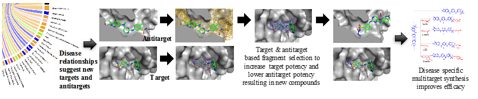

Research Overview
Interactome Based Immunomodulatory Drug Design
Traditional virtual or high-throughput screening approaches for drug discovery are highly specific to screening compound libraries against a single biological target of interest. It often results in ineffective leads, in that, even after an expensive lead optimization process, the clinical candidates are often non-efficacious or unsafe human drugs. The most effective drugs in humans (e.g. Aspirin® or Gleevec®) inevitably interact with multiple proteins, a feature that traditional models based on single target drugs fail to take into account. Currently, there are no high-throughput experimental methods to look at all biochemical interactions of a small molecule compound in an organism (human) that is much needed to ascertain both toxicity and efficacy of a drug. Furthermore, the synthesis of compound libraries explores diverse chemical space that is unrelated to the disease of interest with no input from disease specific biological targets and antitargets to guide synthesis. Recognizing this unexplored area, the overarching goal of our research program is to develop interactome based computational chemistry techniques and bioanalytical assays, (1) to design, synthesize and verify disease specific multitargeted immunomodulatory drugs, and (2) enable immunomodulation by using cell-drug conjugates as drugs.
Towards this goal, we have developed a drug discovery, design, and repurposing platform that analyzes compound-protein structural interaction signatures across multiple proteomes from different organisms to determine drug behavior. The platform implements a modeling pipeline that generates an interaction between ‘all’ (currently 3,733) human ingestible drugs and ‘all’ (currently 48,278) proteins using our interactome flexible docking program to compute ~1 billion proteome-compound interactions. Our hypothesis is that similar set of interactions across the representative universe of protein structures determine drug behavior by inferring homology of compound/drug behavior at a proteomic level. We, along with our collaborators, have prospectively validated our predictions using in vitro and in vivo preclinical studies for more than 10 different diseases including immunological, metabolic, infectious and genetic indications (castration resistant prostate cancer, type 1 diabetes, dental caries, dengue, herpes, drug resistant tuberculosis, cirrhosis, etc.), yielding an overall rate of ~35% that are comparable or better than the corresponding treatment for the disease.
We have used our approach for all 1439 known diseases and indications to discover disease-disease relationships (e.g. overlapping mechanisms between Alzheimer disease with diabetes, heart failure, inflammation, and prostate cancer with breast cancer, hypertension and inflammation, among others) that are used to identify novel targets and antitargets. Our research on interactome modeling and verification will contribute to the understanding that diseases are heterogeneous combination of other diseases and indications with overlapping mechanisms to discover and design novel therapeutics.
Projects in our lab are divided with the following subgroups:
Interactome Methods
Flexible Docking And Design Software: Candock
We have developed a hierarchical flexible docking with design software (candock) that takes multiple biomolecules and biomolecular interfaces (protein, protein/protein, protein/nucleic acids, etc) along with a database of small molecules to generate a profile of the interaction of a compound with all proteins (interactome). We use this interactome profile, as a surrogate of compound function and activity for drug repurposing and discovery, and as a guide to do interactome based drug design. The potential energy functions computing protein-compound interactions are derived from statistics on large-scale compound libraries resulting in hundreds of atom types. This results in selection of atom types based on the chemical make up of the binding pocket to suggest changes to the lead. Future development of these functions will include polarizable components to complement the current atom types, as well as, new statistical energy functions for improved accuracy. We are implementing a faster version of this software that takes advantage of General Purpose Graphics Processing Units (GPGPU). We are also in the process of deploying web based applications that will enable free and public use of all features of our software.
Bioanalytical Interactome Assays
We are developing new bioanalytical chemistry methods for an ‘interactome assay’ to complement our computational docking and design method. These tools will experimentally measure the interaction profile of a mixture of proteins and compounds. These assays will also be used to quantify biomolecular interactions in cell mixture environments (micro-interactome) to guide and verify our cell responsive drug predictions and designs. We also plan to use these techniques to develop biosensors for the diseases of our interest.
Neuroimmunology
Till a few years ago, the brain was thought to be an "immune privilege" organ. Recent advancements have highlighted the crucial interaction between the central nervous system and the immune system thereby creating new opportunities to explore the underlying disease mechanisms in neurodegeneration.
Alzheimer's disease (AD) is the most common form of dementia and has affected more than 40 million people worldwide (World Alzheimer Report 2015). We are currently focused on elucidating the immune suppressive mechanisms in AD. Along with the amyloid-beta aggregates and neurofibrillary tau tangles, inflammation is also known to be a major pathological hallmark of AD. Our efforts extend towards finding new ways to treat this devastating disease by discovering novel immunomodulatory drugs and identifying novel targets for AD immune suppression. Specifically, we use our computational drug predictions in vitro on primary neuron cultures and cell lines (e.g. SH-SY5Y cells) for drug testing, use CRISPR-Cas9 and shRNA technology for target identification, and humanized mouse models for in vivo testing.
Immunomodulatory Drug Design
Computational ANalytics for DESIGN (CANDESIGN)

The role of the immune system is essential to treatment of many diseases. Cancer immunotherapy has gained a lot of attention in recent years. Almost all cancer drugs, either target the mechanisms to kill the tumor directly (anti-disease), or the immunotherapeutic agents use mechanisms of the immune system to target cancer without affecting cancer directly. Our primary goal is to design single chemical entities with dual action for anti-disease activity: target the anti-disease mechanisms directly, as well as, alter the function of suppressive immune cell types for targeted disease-specific immunotherapy. Specifically, our novel compounds designs and synthesis are based on anti-disease active compounds, that will change the phenotypic response of suppressive immune cell types for targeted immunotherapy. As one example, the cell types we use are regulatory T cells (Tregs) for type 1 diabetes and Alzheimer disease, and myeloid derived suppressor cells (MDSCs) for castration resistant prostate cancer. We are collaborating with disease experts in the medical schools across the country to test these compounds in vivo, after in vitro validations are done in our laboratory. Some ongoing projects related to design and synthesis of immunomodulatory compounds are to: (a) selectively enhance Tregs proliferation, (b) alter suppressive function of monocytic MDSCs derived from the peritoneal cavity by targeting disease-specific upregulated genes in these cells.
We have also initiated a new direction to develop cell-drug bio-conjugation chemistry to perturb immunological tolerance and use ‘cells as drugs’ for targeted immunotherapy.
Multiplayer Drug Discovery
Molecular Interaction using New Technology (MINT)
A challenge in computational drug discovery and design is a requirement for large amount of computational power to include full flexibility of the receptor and ligand. We want to involve citizens to play a game where they can make moves to change the conformation of the drug molecule and the protein target to get the best score. To understand biomolecular structure and interactions in detail requires a 3D, dynamic perspective, and educational research indicates an inquiry-led approach is more effective than a didactic approach. Motivated by the need to enhance education and visual learning experience of students, we have developed a virtual reality (VR) educational game for visualization and manipulation of biomolecules based on concepts of molecular interactions that are taught in a dynamic immersive environment. Our VR platform educates students about the principles of intermolecular forces and structural manipulation. This involves both education and science, where we will give out drug targets currently active in the lab to the community and the best prediction (either from the computational prediction or the citizen scientist) will be tested for their chosen targets of interest. If the results are experimentally validated and we write a paper based on this prediction, the person who identified the best hit will be a co-author on the paper. We are also developing automated resources (our raspberry pi powered liquid handling robot) to use for validation of compound-protein binding predictions. This is a huge undertaking and we hope this project can become a community-wide initiative. We welcome other labs to join hands for target selection and experimental verification to enhance science and education to spread the love for chemistry.